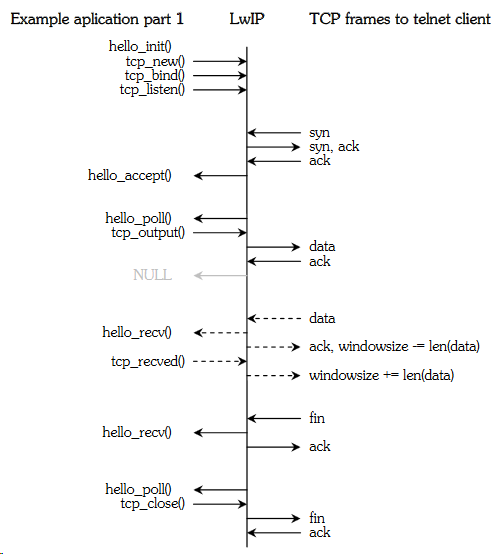
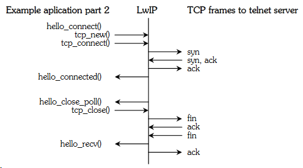
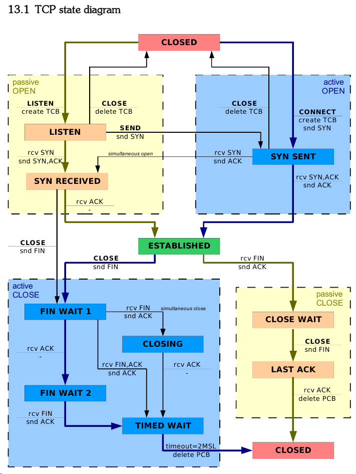

Configuration
lwipopts.h - In this file you can enable or disable parts of the stack, you can set the buffer sizes, and you can enable debugging. You can see a complete list of all options and their default settings in opt.h.
cc.h - This header file contains compiler and architecture dependent options like definitions integer sizes.
perf.h - In perf.h two functions are defined for performance measurement.
sys_arch.c + sys_arch.h - These two files define functions for the OS emulation layer. When you want to integrate LwIP with an operating system there are a few functions you have to create. These functions are used by LwIP for communicating with the operating system.
Initialisation
Before you use functions from the LwIP stack you have to initialise all the parts in a specified order. And
when you use DHCP you have to wait for DHCP to resolve some IP settings. The first function you have to call is stats_init() to zero all statistics. These statistics are very useful for debugging and performance tuning but you could disable them in a production release.
If you use an operating system you should call sys_init() to initialise the OS emulation layer. This OS emulation layer maps functions needed by LwIP to OS specific functions.
Next you have to initialise all memory buffers by calling mem_init() for the heap memory, memp_init() for a predefined number of different structures and pbuf_init() for a pool of pbufÊs.
When this is done you can initialise the protocols by calling netif_init(), ip_init() and optionally udp_init() and tcp_init().
Now the LwIP stack is completely initialised, but before you can start using the stack, you need to start calling some functions at regular intervals as described below and you need to register and enable a network device.
This is done by calling netif_add() and netif_set_default(). When you have specified the IP address of the
interface, the net mask and the gateway IP address you can call, netif_set_up(). When you want DHCP to configure the IP settings you call dhcp_start(). After enabling the interrupts you have to wait for netif_is_up() to return true before you use the network device.
Timers
There are a number of functions in the LwIP stack that have to be called at certain intervals. All the functions
and there intervals are listed below and an example interrupt routine can be found in main.c in the
appendices. The intervals can are given in the header corresponding header files and can be tuned.
tcp_fasttmr() 250ms
tcp_slowtmr() 500ms
ip_reass_tmr() 500ms
dhcp_fine_tmr() 500ms
dhcp_coarse_tmr() 60000ms
etharp_tmr() 5000ms
TCP


Listen for incoming TCP connections
1. To open a listening TCP connection you first need to create a tcp_pcb (protocol control block) structure
using tcp_new(). In this structure, LwIP stores all information about a connection. If tcp_new() returns
NULL no room is available for a new TCP connection and you canÊt open a new listening TCP connection.
2. When you succeeded in creating a new PCB you can try to bind it to a port and IP address using tcp_bind(). When you want to bind the listening connection to all local IP addresses or you only have one
local IP address, you can use IP_ADDR_ANY as IP address. If the port is already in use tcp_bind() will return ERR_USE and you canÊt open a listening connection at that port. Do not forget to cleanup the pcb when this happens.
3. The next step is to tell LwIP to start listening. For the actual listening connection, LwIP uses a different
(smaller) pcb structure. This structure is allocated when you call tcp_listen(). If no space is available for a
new listening pcb tcp_listen() returns NULL, if the allocation succeeds LwIP clears the original pcb and starts listening. When NULL is returned, you should clear the original pcb yourself.
4. The last step is to set some options in the pcb. You can give LwIP an argument, which is returned to you each time LwIP calls one of your callback functions. Usually this is a pointer to a block of status
information you can use, but in our example, no status information is needed yet so we set it to NULL.
The second option you should set is the priority of incoming connections. Each connection has a priority
level, when all connections are in use, the connection that has a priority level equal to or lower than the
priority level of the incoming connection, and has been idle the longest, will be removed.
The last thing you need to do is to specify your accept function using tcp_accept().
err_t hello_init(void)
{
struct tcp_pcb * pcb;
struct tcp_pcb * lpcb;
1. if ((pcb = tcp_new()) == NULL)
return ERR_MEM;
2. if (tcp_bind(pcb, IP_ADDR_ANY, 22) != ERR_OK)
{
tcp_abort(pcb);
return ERR_USE;
}
3. if ((lpcb = tcp_listen(pcb)) == NULL)
{
tcp_abort(pcb);
return ERR_MEM;
}
4. tcp_arg(lpcb, NULL);
tcp_setprio(lpcb, TCP_PRIO_NORMAL);
tcp_accept(lpcb, hello_accept);
return ERR_OK;
}
Accept an incoming TCP connection (passive open)
1. When someone tries to connect to our listening TCP connection and room for a new pcb can be
allocated our previously specified accept function is called. In almost every case you need to allocate some memory for status information and set the location as the argument LwIP gives you when calling one of your functions. If you cannot, you can abort the connection by returning an ERR_MEM. In our case, we reserve only one byte.
2. When you have decided to accept the connection, you should declare your callback functions. You should at least declare an error and receive function. The error function is called when something goes wrong and is used to inform you the connection is no longer available and you should free the memory you were using for the connection. The receive function passes you the received data, or a NULL pointer when a close is received.
3. Optionally you can specify a poll function that is called periodically and a sent function that informs you when data you have sent has been confirmed. For this example, we are not interested in when data has been confirmed so we do not specify a sent function. We specify a poll function to be called every two TCP gross timer periods of half a second. If you want the connection not to be lost when to many other connections occur you should set the priority to a higher level using tcp_setprio()
4. To finish the accept function we return ERR_OK.
err_t hello_accept(void *arg, struct tcp_pcb *pcb, err_t err)
{
u8_t *state;
1. if ((state = mem_malloc(1)) == NULL)
return ERR_MEM;
*state = 0;
tcp_arg(pcb, state);
2. tcp_err(pcb, hello_err);
tcp_recv(pcb, hello_recv);
3. tcp_sent(pcb, NULL);
tcp_poll(pcb, hello_poll, 2);
4.
return ERR_OK;
}
Opening an outgoing tcp connection (active open)
1. To open an outgoing connection the first thing you usually want to do is reserve some memory, in our
example just 1 byte for status information.
2. When this succeeds we will try to reserve a new tcp_pcb for the connection using tcp_new(). If this fails you should free the memory previously reserved and give up. You can also close another connection or retry using tcp_alloc() with a higher priority.
3. Now you can set the options in the same way as explained above. Instead of the poll function from our
previous example, we let LwIP call a close function every five seconds.
4. Afterwards the pcb of the connection is ready and you can call tcp_connect(). If no room is available to create a TCP syn segment (a segment to inform the other side you want to open a connection), tcp_connect() returns ERR_MEM. In this case you can give up and clear the allocated memory and pcb or you can keep trying.
5. If you specified a connected function when calling tcp_connect() your connected function is called when the connection is established. If the connection fails, your error function is called. Currently, no error is given to your connected function. In the connected function, you can for example send some data to the other host. To keep this example simple, we try this only once.
err_t hello_connect(void)
{
u8_t *state;
err_t err;
struct tcp_pcb *pcb;
struct ip_addr ipaddr;
IP4_ADDR(&ipaddr, 192,168,0,112);
1. if ((state = mem_malloc(1)) == NULL)
return ERR_MEM;
*state = 1;
2. if ((pcb = tcp_new()) == NULL)
{
mem_free(state);
return ERR_MEM;
}
3. tcp_arg(pcb, state);
tcp_err(pcb, hello_err);
tcp_recv(pcb, hello_recv);
tcp_sent(pcb, NULL);
tcp_poll(pcb, hello_poll_close, 10);
4. err = tcp_connect(pcb, &ipaddr, 22, hello_connected);
if (err != ERR_OK)
{
mem_free(state);
tcp_abort(pcb);
}
return err;
}
5. err_t hello_connected(void *arg, struct tcp_pcb *pcb, err_t err)
{
tcp_write(pcb, helloworld, 12, 0)
return ERR_OK;
}
Receiving data
1. When data or a FIN-flag (passive close) has arrived your previously defined receive function is called. If the pbuf pointer is NULL, a FIN-flag is received. To cleanly close a connection, both sides have to successfully send a FIN-flag. Therefore, if you have already sent a fin flag you can clean up. If you haven't sent a FIN-flag yet you have to send it by calling tcp_close(). It is possible there is no room for a new tcp segment containing the FIN-flag so you have to keep trying to call tcp_close() until LwIP is able to store the FIN-flag. If you try closing only once the connection might stay in the close-wait state (see appendix 13.1 TCP state diagram)
2. If the pbuf pointer is set, the pbuf contains the received data. When you are done handling the data you should clear the pbuf and afterwards tell LwIP how many bytes you have handled using tcp_recved(). This enables LwIP to increase the receive window so new data can be send to us.
3. When you have successfully handled the received data you should return ERR_OK.
err_t hello_recv(void *arg, struct tcp_pcb *pcb, struct pbuf *p, err_t err)
{
u8_t *state = (u8_t *)arg;
u16_t len;
1. if (p == NULL)
{
if (*state == 255) /* close send */
hello_end(pcb, state);
else /* close not yet send */
*state |= 2;
}
2. else
{
len = p->tot_len;
pbuf_free(p);
tcp_recved(pcb, len);
}
3. return ERR_OK;
}
Sending data
As the tcp_write() and tcp_close() functions might fail you have to keep trying until you succeed. You can use the poll and sent functions for this purpose but you could also use a different thread or the background loop for this purpose. You can use the status variables from the argument to remember what you wanted to send.
The last argument of tcp_write() can be set to 0 or 1, when set to 1 the data you wanted to sent is copied and you can immediately reuse or clear the memory after the tcp_write() function returns successfully. When set to 0, you can clear or reuse the memory when the data has been acknowledged indicated by sent call-back.
LwIP can combine multiple small pieces of data queued by tcp_write() into one tcp packet. This is done by waiting a while after a tcp_write() before actually sending. If you do want to send data immediately you can call tcp_output() after the tcp_write().
const char *helloworld = "hello world\n";
err_t hello_poll(void *arg, struct tcp_pcb *pcb)
{
u8_t *state = (u8_t *)arg;
if ((*state & 1) == 0) /* hello world not yet send */
if (tcp_write(pcb, helloworld, 12, 0) == ERR_OK)
*state |= 1;
if (*state == 3) /* close received and hello world send */
if (tcp_close(pcb) == ERR_OK)
hello_end(pcb, state);
return ERR_OK;
}
Closing a TCP connection
There are three ways for a connection to close. You requested the close yourself, the other side requested the close, or an error has occurred and the connection is aborted.
1. When a connection is aborted, LwIP clears the pcb and afterwards calls your error function. In your error function, you should clear the memory you used and prevent your threads or background loop from using the deleted pcb.
2. When the other side has sent you a close, you receive an empty data segment. You can still send some final data and afterwards (in the example indicated by state=3) you have to call a tcp_close(). When you succeeded in sending a close, you should cleanup. (see also the paragraph about receiving)
3. When you are the one to send the fin flag first, in our example done by defining a poll function to be called after 5 seconds that calls a tcp_close(), you have to wait for the other side to send a fin flag back. Meanwhile you can still receive data. When the fin flag arrives, you can cleanup.
4. To cleanup, you should free the memory you used for status information. The TCP connection could still be in the CLOSING, of LAST_ACK state (see TCP state diagram) waiting for a last ack, This means LwIP could still try to use one of the call-back functions, although our status memory has been cleared. To prevent this you should set all call-back functions to NULL
void hello_err(void *arg, err_t err)
{
1. mem_free(arg);
}
err_t hello_poll_close(void *arg, struct tcp_pcb *pcb)
{
u8_t *state = (u8_t *)arg;
if (tcp_close(pcb) == ERR_OK)
{
if ((*state & 2) == 2) /* close received */
2. hello_end(pcb, state);
else /* close not yet received */
3. *state = 255;
}
return ERR_OK;
}
void hello_end(struct tcp_pcb *pcb, u8_t *state)
{
4. tcp_err(pcb, N ULL);
tcp_recv(pcb, NULL);
tcp_sent(pcb, NULL);
tcp_poll(pcb, NULL, 0);
mem_free(state);
}
Zero Copy
LwIP uses buffers called pbuf and each frame is spread over a chain of one or more pbuf's
To pass received data to the LwIP stack without copying it you can use a special pbuf type called PBUF_REF. When a frame is received you can allocate a pbuf for each block of data described in a buffer descriptor using pbuf_alloc() and chain the pbufs using pbuf_cat(). To know when the lwip stack and the user are done with the frame you have to increase the reference count from the pbuf chain with pbuf_ref(). And regularly check the reference count of the pbufКs to see if the reference count has been decreased back to one. When this is the case you are the only one using it and you can clear both the buffer descriptors and the pbuf chain. You have to clear the first non-empty buffer descriptor to be used by the Ethernet controller and make it point to the freed block of memory. This could be an other descriptor than originally used because the first packet received is not always the first packet freed.
Another way to pass the received data to the LwIP stack without copying it is by using the pbufКs from the PBUF_POOL. The LwIP stack supports a pool with a predefined number of pbufКs that have a predefined length. You can use these pbufКs by making all receive buffer descriptors point to a location within the data segment of a pbuf from the pbuf pool. Because the data segments from the pbuf pool are not aligned to sixteen bytes you have to align each buffer descriptor pointer within the data segment of the pbuf. This is not very memory efficient as each buffer could lose fifteen bytes. You have to regularly check for freed pbufКs in the pool so you can reuse them.
Initialisation
In the network interface driver you have to implement an initialisation function that will be called from netif_add(). In this function, you have to define a two-letter name describing the interface, the function that should be called to send an IP packet, the MTU and some flags. You also should initialise your hardware. If the device is an Ethernet controller you should also call etharp_init() and define a hardware (MAC) address and the function to be called by the ARP protocol to send an Ethernet frame. You should also make sure a etharp_tmr() is called every 4 seconds.
Sending
In the function you defined to sent IP packets, you should simply make sure the IP packet is sent to the hardware. In case of an Ethernet device you should pass the packet to etharp_output(). This function will create an Ethernet header in front of the IP packet and send the Ethernet frame to the output function you defined for sending Ethernet frames. In this second output function, you send the frame to the hardware.
Receiving
When you have received an IP packet from your hardware, you should send it to the input function defined in the netif structure. In case of an Ethernet device, you should first check the type field. When the Ethernet frame contains an ARP packet you should send it to etharp_arp_input(), when the frame contains an IP packet you should first call etharp_ip_input() and remove the Ethernet header using pbuf_header() before you send it to the input function. It would also be wise but not strictly necessary to check the Ethernet checksum and the Ethernet destination field and drop the broken or unwanted packets.
Tuning
There are a lot of options, you can configure in LwIP. There are a number of parts you might not need and can disable and there are many buffer sizes you can change
Disable parts
• The Berkeley-alike socket API is a very large part of the LwIP code (22%) and you need an operating system to use it. The API also uses some extra memory for buffers and messages. Using the socket API is a bit more common, easier and it might save some implementation time. However, when you have a very limited amount of memory available you can do exactly the same without the socket API.
• When you are not using DHCP or any other UDP protocol you could leave out UDP, however this wonКt save a lot of code size (1.55Kb on the ColdFire)
• DHCP is disabled by default. DHCP enables the board to automatically connect to most networks. You could also put the IP configuration in the implementation itself or ask the user to setup the IP configuration manually every boot every boot.
• LwIP can keep some information about the number of packets sent, the number of errors and memory usage. Disabling the stats will save 276 bytes of ram and 2.59Kb of code; it also saves the processor the small trouble of counting.
• Using a zero copy network interface driver saves a lot of RAM, as you do not need extra buffers for the network interface. It is also much more efficient because copying data is relatively CPU intensive.
• The checksum calculation is also cpu intensive and you could disable the checksum checking for incoming packets. You have to make sure that broken packets are discarded by the lower layers so no broken packets will arrive at your implementation.
Buffers
mem
LwIP has its own memory heap, controlled by mem_alloc() and mem_free(), this heap is mainly used for storing outgoing data and by the user application.
You could make sure the heap will never overflow by setting a high value for MEM_SIZE and low values for the number of TCP connections (MEMP_NUM_TCP_PCB), the size of the TCP send buffer (TCP_SND_BUF) and the number of TCP segments (TCP_SND_QUEUELEN). This will not make sure you always have room to send data because the send buffer or maximum number of segments might still be reached. This just prevents connections from not being able to send data, when other connections have used all the available memory.
In most cases you can just set the memory size high enough to allow a few connections to have their send buffers full while you could have some other connections open that are idle. A full memory heap is not a big problem because LwIP will just return an error to your application and your application can try again later.
I have set the send buffer for the connections to 2048 bytes, and the memory heap to 16000 bytes. This means the memory heap will take up 25% of the memory and about 7 connections can have their send buffers full before the heap will overflow. Increasing the buffer size will speed up sending because more data can be on its way at the same time, but it decreases the number of connections that can send at the same time without the heap getting full.
memp
For structures like PCBКs, segments and ROM pbuf descriptors, LwIP uses a predefined amount of structures controlled by memp_alloc() and memp_Free().
The number of TCP listeners and UDP connections used is often known at compile time so you could set the corresponding memp values to exactly the number you need. The number of TCP connections that will be open at the same time is harder to predict. To help prevent connection failure when too many connections are established or in the time_wait state (a closed connections that is not sure the other side has successfully closed too), LwIP will automatically overwrite the oldest connection in time_wait state or another connection with a priority lower or equal to the new one.
There are also a number of pbuf structures in the memp memory. They are used to point to read only blocks of memory, so if you often send data directly from ROM you should allocate a lot of these pbuf structures, when you will never send data from ROM you can set this number to zero.
pbuf
For incoming frames LwIP uses a pool of pbuf's with a predefined length. They can be allocated and freed with pbuf_alloc(,PBUF_POOL) and pbuf_free(). The number and size of these pbufs should accommodate a number of receive windows. When these pbufs get full, data is lost and has to be retransmitted. You depend on congestion algorithms to slow down the amount of traffic sent to you. So a small receive window (TCP_WND) is advised, but a too small window will slow down the receiving speed.
In some cases, when you have your own buffer pool, or when you know the size of an incoming frame beforehand, another type of pbuf's is more suited for your network interface driver. In this case, you can just disable the pbuf pool by setting PBUF_POOL_SIZE to 0.

4
5